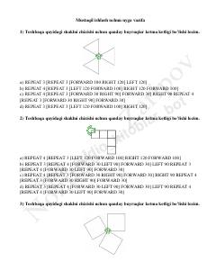

1ULOGO dasturlash tilida geometrik shakllar chizish bo'yicha amaliy topshiriqlar to'plami.
Ushbu hujjat LOGO dasturlash tilida toshbaqa grafikasi yordamida turli geometrik shakllarni chizishga oid amaliy topshiriqlarni o'z ichiga oladi. O'quvchilar berilgan buyruqlar ketma-ketligini tahlil qilish va to'g'ri kodlarni tanlash orqali dasturlash ko'nikmalarini mustahkamlashlari mumkin.